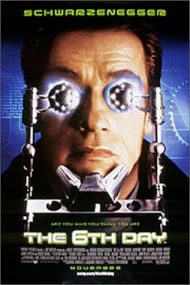

|
It was during one of my pensive moments (I've been having a lot of those since I bought that new comfy leather swivel chair) that I thought about cats.
Not just any cat, but the one that was very busy sat in my lap dozing off - you see for the past 12 months or so (he was a Christmas present from my wife) I've owned a cat. We got him as a 6 month old kitten, and I've watched him grow up into the minature tiger he is today - he's currently sitting on top of my laser printer, and no doubt I'll find cat hairs embedded in the toner tomorrow morning.
I began to wonder what would I do in 15-20 years time when he finally did kick the bucket - I began to wonder if I could at that point in time clone my cat.
Rather ironically, that's the subject of this film - The 6th Day (about time you got around to it. Ed)
The film is set in the not-too distant future. It's so close in fact that a lot of the items you see in the movie are already available in one form or another. For instance the Internet-enabled fridge that can automatically re-order items, and the onStar navigational system for cars (although not even that is clever enough to drive your car for you today).
Arnie plays Adam Gibson, a charter helicopter pilot for a snowboarding/skiing company. He's a traditional man, who would rather tell his daughter the truth about their dog (that has to be put down), than get it cloned.
His life takes a twist when Gibson arrives home to find himself already at his own birthday party. He learns that he was cloned by accident, and that the company that killed him are trying to kill him, as clones are illegal.
He ropes in the assistance of his fellow pilot (who also turns out to be a clone), and eventually manages to join forces with himself to penetrate the offices of the sinister global-mega-corporation that cloned him and many others to rescue his kidnapped wife and daughter.
Like most of Arnie's movies this is an action film (with double helpings of Arnie, it can get interesting), but it does at least have a half-decent plot behind it and some reasonable special effects, and covers a subject that is particularly topical. There's something missing though, and the movie didn't want to make me go and see it again (but I'd probably watch it on TV when there was nothing else on).
Rating: 7/10 ; watch out for the Virtual Girlfriend (no doubt to become a regular companion to some css regulars).
The 6th Day stars Arnold Schwarzenegger, Michael Rapaport, Robert Duvall, Sarah Wynter, and Tony Goldwyn. It's in cinemas everywhere now in the US, and due for release in the UK on December 20th 2000.
|